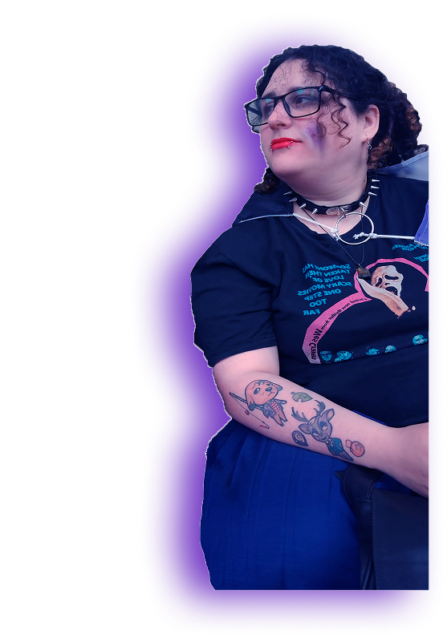

Meet la diseñadora
Mi nombre es Belén, soy estudiante de la Universidad Nacional de Lanús y me enfoco en diseño de afiches, vectorizado, fotomontajes, ilustración y diseño de personajes. Me inspiran tanto lo analógico como lo digital, el horror, lo virtual y el caos de crear, porque creo que ningún proceso creativo es completamente ordenado.
Llamé Zari a mi espacio de diseño por la zarigüeya, un animal con el que me identifico por su curiosidad y adaptabilidad. Para mí, el diseño también es eso: abrirse paso entre el desorden, observar, aprender y reinventarse.